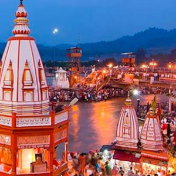

The city is situated on the right bank of the Ganges river, at the foothills of the Shivalik ranges.[4] Haridwar is regarded as a holy place for Hindus, hosting important religious events and serving as a gateway to several prominent places of worship. Most significant of the events is the Kumbha Mela, which is celebrated every 12 years in Haridwar. During the Haridwar Kumbh Mela, millions of pilgrims, devotees, and tourists congregate in Haridwar to perform ritualistic bathing on the banks of the Ganges to wash away their sins to attain moksha.
According to Puranic legend, Haridwar, along with Ujjain, Nashik and Prayagraj (Allahabad), is one of four sites where drops of amrita,[5] the elixir of immortality, accidentally spilled over from a kumbha (pitcher) while being carried by the celestial bird Garuda during the samudra manthan, or churning of the ocean of milk.[6] Brahma Kund, the spot where the amrita fell, is located at Har ki Pauri (literally, "footsteps of the Lord") and is considered to be the most sacred ghat of Haridwar.[7] It is also the primary centre of the Kanwar pilgrimage, in which millions of participants gather sacred water from the Ganges and carry it across hundreds of miles to dispense as offerings in Shiva shrines.[8] Today, the city is developing beyond its religious importance with the fast-developing industrial estate of the State Industrial Development Corporation of Uttarakhand (SIDCUL),
In Sanskrit, the liturgical language of Hinduism, Hari means "Lord Vishnu", while dwar means "gateway". So, Haridwar translates to "The Gateway to Lord Vishnu". It earns this name because it is typically the place where pilgrim's start their journey to visit a prominent temple of Lord Vishnu – Badrinath.
Similarly, Hara could also mean "Lord Shiva".[6] Hence, Hardwar could stand for "Gateway to Lord Shiva". Hardwar is also a typical place to start a pilgrim's journey in order to reach Mount Kailash, Kedarnath, the northernmost Jyotirlinga and one of the sites of the smaller Char Dham pilgrimage circuit – all important places for worship for Hindus.
According to legend, it was in Haridwar that Goddess Ganga descended when Lord Shiva released the mighty river from the locks of his hair. The River Ganga, after flowing for 253 kilometres (157 mi) from its source at Gaumukh at the edge of the Gangotri Glacier, enters the Gangetic Plain for the first time at Haridwar, which gave the city its ancient name, Gangadwára